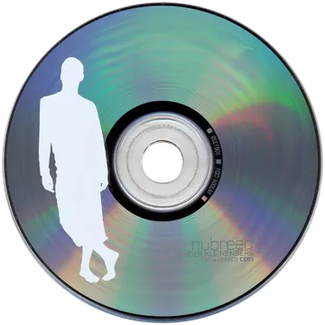
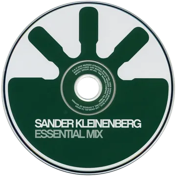
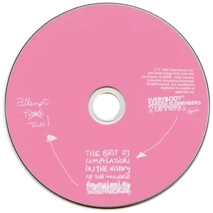
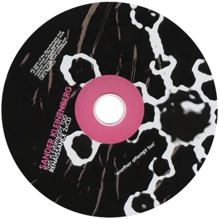
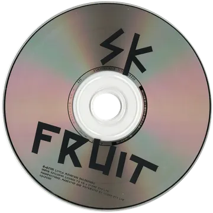
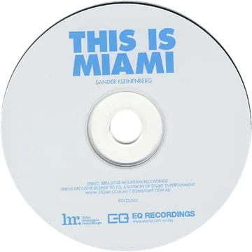
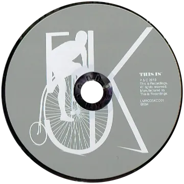

sanderkleinenberg.com / Biography
Dutch DJ, producer and video DJ. More than three decades of records, remixes and very long nights, from a local bar to Coachella, Glastonbury and Ultra.
In his own words
Sander Kleinenberg has never been particularly good at standing still.
For more than three decades, the Dutch DJ and producer has followed one fairly simple instinct: play the records that excite him. Preferably before someone decides what genre they belong to.
That instinct has taken him from small, dark rooms to some very large ones, through progressive house, techno, disco, psychedelia, electronic pop and a fair amount of music that was probably a bad idea on paper. The common thread was never a genre. It was curiosity.
Emerging from the Netherlands in the 1990s, Sander became part of a generation of DJs who somehow found themselves taking underground electronic music around the world. Records like My Lexicon, The Fruit, This Is Miami and Can You Feel It became markers along the way, while his DJ sets built a reputation for joining dots between records that didn’t always appear to have much business being in the same room.
It took him around the planet more times than he can reasonably remember, from sweaty basements to Coachella, Glastonbury and Ultra, and through a long list of clubs, afterparties, airports and questionable hotel breakfasts.
The studio has been equally difficult to keep in one lane. Over the years Sander has produced, remixed and collaborated with Madonna, Daft Punk, Janet Jackson, Justin Timberlake, Halsey, LANY, Eurythmics, Jamie Cullum, Audio Bullys, Gwen McCrae and James Vincent McMorrow — which probably says more about his musical attention span than any genre description ever could.
And, inconveniently, he’s still curious.
A new generation of artists and a more adventurous corner of electronic music have pulled him back towards the reason he started doing this in the first place: finding strange, beautiful records and figuring out what happens when you play them very loud in the right order.
The sets are getting deeper again. The edges are getting stranger. New music is being made, new collaborations are taking shape, old friends are resurfacing and younger artists are introducing him to records he wishes he’d found first.
This isn’t about recreating a particular period of Sander Kleinenberg. That would be far too easy. It’s about continuing what was there from the beginning.
From a local bar to the main stage
Starts DJing in a local bar at fifteen, rock and dance records in the same set.
First record: Bombay, as Free Frogs with a few friends, on Belgium’s Wonka Beats.
A run of twelve-inches under a handful of aliases (Europe, Sander, S’n’S, MTF, Sakan, Rails Inc.), among them You Do Me Wrong, picked up by New York’s Strictly Rhythm in 1996.
Part one of the 4 Seasons trilogy, on London’s FFRR.
My Lexicon. Sasha puts it and Sacred on Global Underground 013: Ibiza, and it settles in as one of progressive house’s standards. Mixes Tranceglobal Airways for Mixmag.
Nubreed 004 for Global Underground.
His Essential Mix compilation, on Warner.
Starts his own label, Little Mountain Recordings, with the last part of 4 Seasons. His remix of Justin Timberlake’s Rock Your Body wins Best Remix at the Dancestar USA Awards. Launches Everybody, nights and a Renaissance album built to remind dance music not to take itself so seriously, and meets VJ Mark Pistoire.
The Fruit. This Is Everybody Too reaches number 11 on Billboard’s Top Electronic Albums. Remixes Janet Jackson’s All Nite (Don’t Stop).
A monthly residency at Crobar in New York, and This Is Everybody! On Tour with Lee Burridge. Remixes Usher and Eurythmics.
This Is Miami, and This Is Sensation, that year’s anthem for Sensation. Everybody grows into This Is, with residencies at Avalon in Los Angeles, Discoteque in Moscow, Paradiso and Melkweg in Amsterdam, Red Light in Paris and Pacha in Ibiza.
Two volumes of This Is… Sander Kleinenberg.
His first artist album, 5K, led by Remember When with Jamie Cullum, and a new label to go with it: THIS IS Recordings.
Remixes Daft Punk’s TRON Legacy (End Titles) and Katy Perry’s T.G.I.F.
Amnesia DJ Sessions Vol. 8. Plays Lahore, Pakistan, to a large crowd.
Can You Feel It, with Gwen McCrae.
Remixes Madonna’s Bitch I’m Madonna and Halsey’s Trouble. Starts The Deepest Mixtape in the Universe, a series that has passed episode 68.
London Girl, with Baby Sol.
Make It Rain, with DARMON, and a tour from Los Angeles, Toronto and Amsterdam Dance Event to Miami, Amsterdam and Balance Croatia.
Albums, mixes, singles, remixes

Nubreed 004Global Underground · 2001
Essential MixWarner · 2002
EverybodyRenaissance · 2003
This Is Everybody TooRenaissance · 2004
The FruitSingle · 2004
This Is MiamiSingle · 2006
5KArtist album · 2010Also: Tranceglobal Airways (Mixmag, 2000), This Is Everybody! On Tour (2005), This Is… Sander Kleinenberg 1 and 2 (2007, 2009) and Amnesia DJ Sessions Vol. 8 (2012).
Festival stages and rooms
Coachella(US) · Glastonbury(UK) · Ultra(US/AR) · Tomorrowland(BE) · Sensation White(NL) · Creamfields(UK) · Mysteryland(NL) · Exit Festival(RS) · Dance Valley(NL) · SW4(UK) · Loveland(NL) · Extrema Outdoor(NL) · ADE(NL)
Plus Reykjavík, Istanbul, Beirut, Dubai, Lahore, Lima, Buenos Aires, Sydney, Bucharest, Riga, Toronto and Montreal, and a long list of clubs, afterparties, airports and questionable hotel breakfasts. Upcoming tour dates are on the homepage.
Sound and picture
Sander is known for DJing with video: his own visuals mixed along with the records, on Pioneer’s DVJ decks.
Since 2003 the visuals have often come from VJ Mark Pistoire, whom he met while looking for a VJ for his Everybody nights; their first show together was in The Hague. The footage is often political, or trippy home video, made by one of the two of them.
Listen and follow
Bookings and press
Bookings: Independent Artist Group, achaykin@independentartistgroup.com
Promoters and press: photos, logos, biography and rider are in the press kit, with a password from the booking agent.